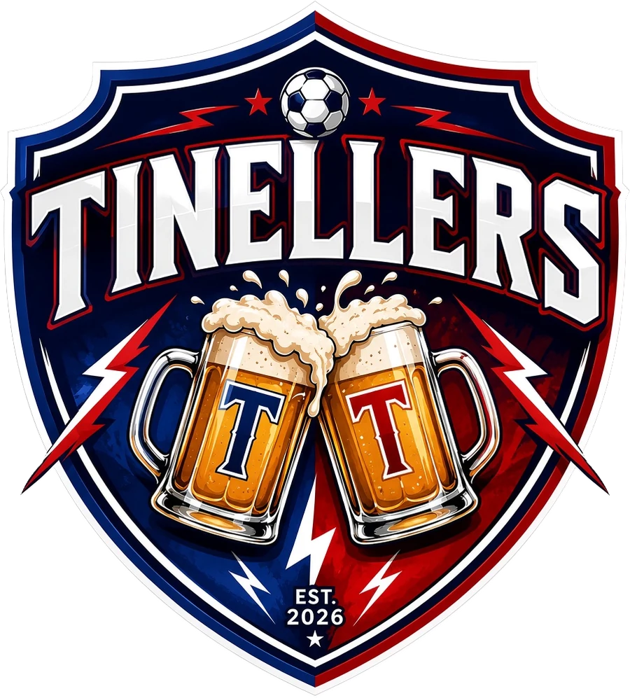
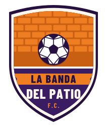
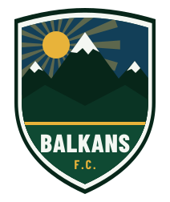

Tinellers FC6–2La Banda del Patio
Jornada 2 · Octubre 2026
- Goles
- Alfa Umaro (2), Alejandro Cuevas (2), Oscar Piero y Junior De Jesus
- MVP
- Arian Burguillo
Calendario y resultados de la temporada 2026. Jugamos los domingos a las 19:00 en Ciudad Lineal.

Domingo 8 nov
19:00
IDB Almudena, F7: 1
Ciudad Lineal
Tinellers FCVisitante
| Partido | Resultado | Jornada | Fecha |
|---|---|---|---|
| Cocidos Madrileños FC–Tinellers FC | Jornada 3 | Dom 8 nov | |
| Tinellers FC–  La Banda del Patio |
6–2 Victoria | Jornada 2 | Oct 2026 |
 Balkans FC–Tinellers FC |
2–3 Victoria | Jornada 1 | Dom 18 oct |
2Partidos jugados
2Ganados
0Empatados
0Perdidos
9Goles a favor
4Goles en contra
Quiniela de la jornada 3: elige jugador, categoría y predicción. Solo por diversión, sin dinero.